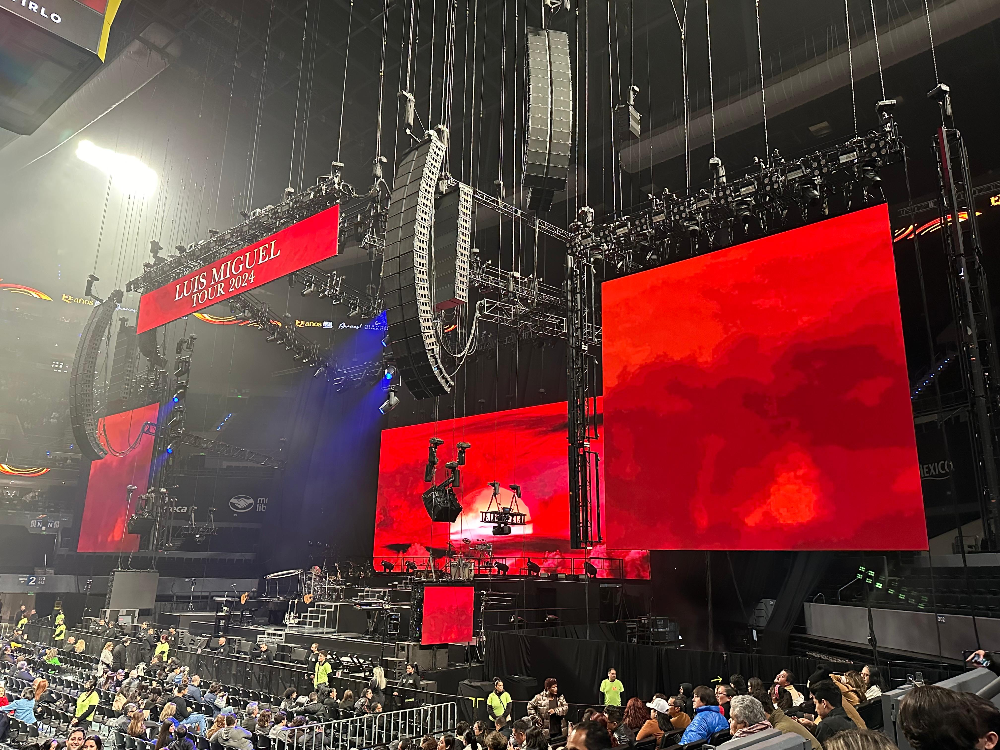
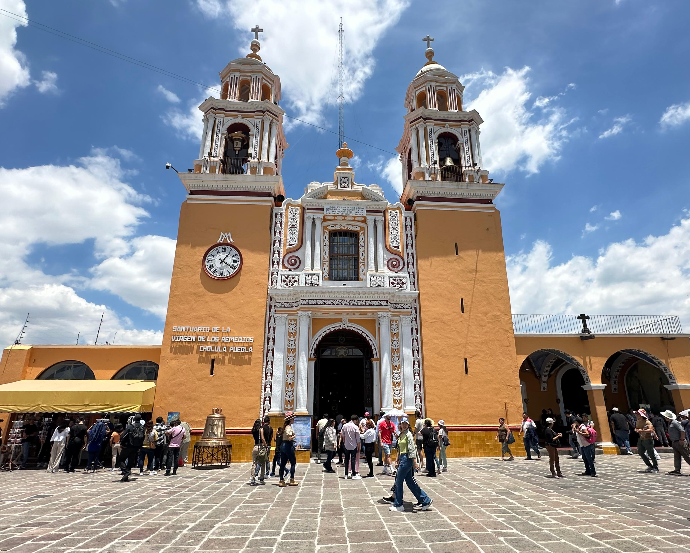
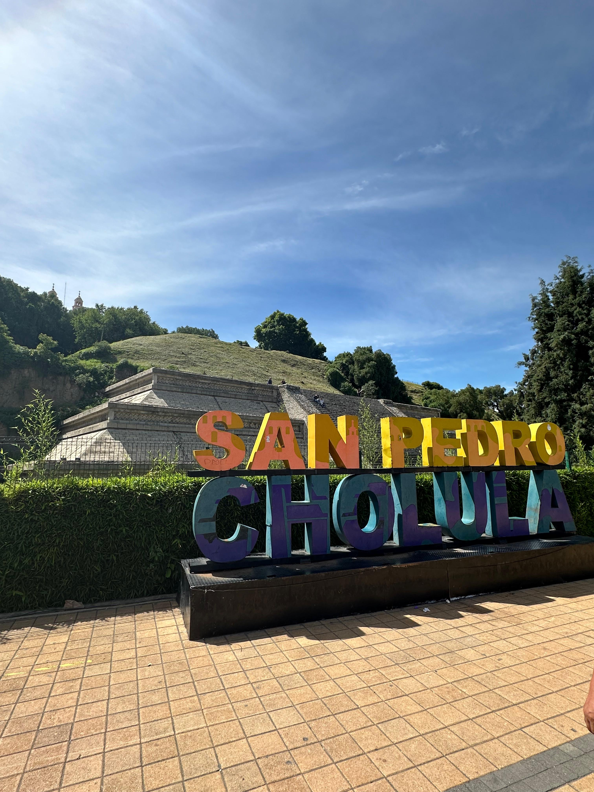
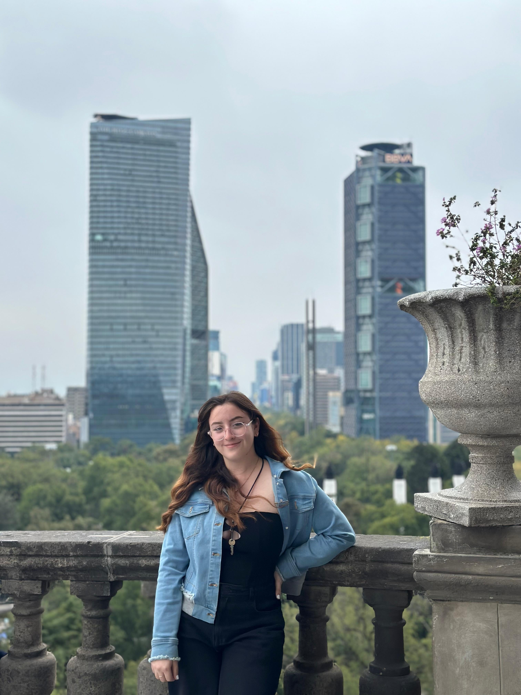

Imágenes simple png y jpg (Foto del concierto de Luis Miguel)
Tuve la oportunidad de asistir al concierto de “Luis Miguel Tour 2024” en la CDMX, no tengo palabras realmente para expresar lo bonito que fue todo. Desde el comienzo hasta el final se sintió una vibra tan bonita por parte del cantante y de los fans desde luego. Definitivamente volvería a repetir esa gran experiencia.
Imágenes gif (Recuerdo de mi gatita "Tomasa")
En mis viajes siempre me encuentro a algún gatito, de diferentes pelajes y tamaños, por alguna razón me pone feliz por que me recuerdan a mis gatitos que se encuentran en mi casa, hacen que los extrañé un poco menos.

Imágenes background (Mis tonalidades favoritas)
Para la selección de esta imagen de fondo, me base en mis colores favoritos, son tonos muy vibrantes y coloridos, que juntos combinan perfectamente.
Imágenes flotantes izquierda y derecha (Recuerdos de mi viaje a "Cholula")
 Para llegar a admirar esta hermosa iglesia que se encuentra en “Cholula” mis amigas y yo tuvimos que subir muchos escalones entre una montaña, la verdad si fue muy cansado, pero la recompensa es muy grande, desde arriba se puede observar el volcán “Popocatépetl” y todos sus alrededores.
También en conocida como la “Iglesia de Nuestra Señora de los Remedios”, es un emblemático templo, este fue construido sobre la gran pirámide de Cholula, considerada la más grande del mundo en volumen. Su arquitectura es estilo colonial mexicano, con unos toques en la fachada que la hacen aún más impresionante.
 Tuve la oportunidad de conocer “Cholula” y realmente puedo decir que es una experiencia memorable. Al llegar te encuentras con muchísimos puestos de venta en donde encontramos desde productos hechos a mano, así como joyería y muchas cositas más, y desde luego encuentras las letras todas coloridas que dicen “Cholula”, lo mejor es que está rodeada de un paisaje muy bello como pirámides y los volcanes a lo lejos.
Es un lugar muy fotogénico, yo fui con mis amigas y fue perfecto por que capturamos momentos tan bonitos. El lugar, se siente lleno de historia y cultura, te hace recordar a aquellas épocas en donde apenas estaban construyendo las iglesias y las calles, nos tocó la fortuna de poder ver a los voladores de Papantla, ninguna de nosotras había tenido la oportunidad de verlos y fue muy impresionante ver como se lanzaban y giraban en el aire. Nos detuvimos a comer en un lugar donde vendían comida corrida, la verdad estuvo muy rica y era la especialidad de la casa. Definitivamente volvería a ir.
Imágenes icono (Mi instrumento favorito)
Uno de los instrumentos que me gusta muchísimo escuchar es el saxofón, su sonido me transmite mucha relajación, además me ayuda a concentrarme algunas veces al momento de estudiar. Sin duda mis canciones favoritas que amo escucharlas en el saxofón son las de Luis Miguel.
Imágenes filtro (Viaje a "CDMX")
En el mes de Octubre tuve la oportunidad de viajar a CDMX por primera vez con mi novio, fue una experiencia totalmente diferente y bonita, las calles, su gente, sus paisajes son realmente impresionantes, a pesar de que tenía miedo la verdad por qué íbamos solos, ya estando ahí simplemente disfrutamos mucho y nos divertimos como nunca.
